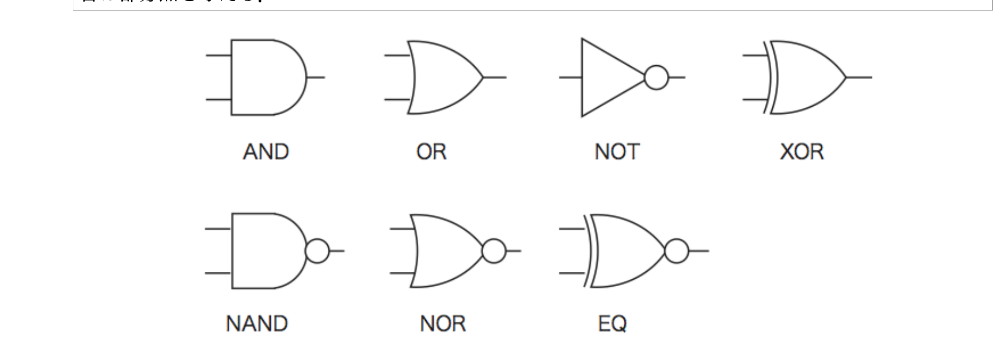

田中哲朗クラス（理科一類5,10,14,35組）
暗証番号「abac」と押すと解錠する（途中で間違えると二度と解錠できない、一度解錠するとその後は何を押しても解錠し続ける）電子錠を有限状態機械としてモデル化すると以下のように表せる。
基本例：$S_0\xrightarrow{a}S_1\xrightarrow{b}S_2\xrightarrow{a}S_3\xrightarrow{c}S_4$（受理・全入力で自己ループ）という直線的な構造で、途中の間違い（else）はすべて共通の非受理の「わな」状態へ行き、二度と抜け出せない。
暗証番号「abac」が入力されたときに解錠する電子錠をモデル化せよ。ただし、途中間違った暗証番号を押しても後から「abac」と入力すれば解錠するものとする（つまり、間違えても"詰み"にならず、再挑戦できる）。また「abac」と入力された後、何か入力されたら施錠する（終状態でなくなる）ものとする。そのあと、更に「abac」と入力すると、再び解錠する。
パスワード"abac"（4文字：a,b,a,c）の接頭辞を追跡する状態機械を構成する。状態は$S_0$（一致なし＝$\varepsilon$）、$S_1$（"a"まで一致）、$S_2$（"ab"まで一致）、$S_3$（"aba"まで一致）、$K$（受理・"abac"完成）の5つ。各状態で、次の1文字を読んだときに新たに一致している最長の接頭辞がどれになるかを考えて遷移先を決める（fail-back方式）。
| 状態 | a | b | c |
|---|---|---|---|
| $S_0$（開始・非受理） | $S_1$ | $S_0$ | $S_0$ |
| $S_1$（"a"） | $S_1$ | $S_2$ | $S_0$ |
| $S_2$（"ab"） | $S_3$ | $S_0$ | $S_0$ |
| $S_3$（"aba"） | $S_1$ | $S_0$ | $K$ |
| $K$（受理・"abac"） | $S_0$ | $S_0$ | $S_0$ |
各行の根拠：$S_1$で"a"を読むと"aa"となるが、一致している最長の接頭辞は"a"自身（自己ループ）——これは他の失敗遷移とは違い、$S_1$の失敗時の戻り先（fail($S_1$)）が$S_0$で、そこから改めて"a"を読んだ遷移先$S_1$に一致するため。$S_2$（"ab"）でb,cを読むと一致は完全に崩れて$S_0$（fail($S_2$)=$S_0$）。$S_3$（"aba"）でaを読むと"abaa"だが、末尾の"a"だけが接頭辞"a"と一致するので$S_1$へ（fail($S_3$)="a"=$S_1$からgoto($S_1$,a)=$S_1$）、bを読むと一致が崩れて$S_0$。
この問題独自の点として、$K$（受理）状態は「何か入力されたら施錠する」ので、a,b,cいずれの入力でも$S_0$（未入力状態）に戻る。他の個別問題でよく見る「特定の1ボタンだけで再施錠」ではなく、ここでは「何を押しても」再施錠する、という単純化されたルールになっている点に注意する。そこから再び"abac"を入力すれば、$S_0\to S_1\to S_2\to S_3\to K$とたどって再解錠する。
検算：入力「aabac」（途中"aa"と間違えても、後から"abac"と続ければ正しく解錠に到達するはず）をたどる。$S_0\xrightarrow{a}S_1\xrightarrow{a}S_1\xrightarrow{b}S_2\xrightarrow{a}S_3\xrightarrow{c}K$ ✓（"aabac"の末尾4文字が"abac"であり、正しく解錠している）。
暗証番号「aba」または「acaca」が入力されたときに解錠する電子錠をモデル化せよ。ただし、途中間違った暗証番号を押しても後からどちらかの暗証番号を入力すれば解錠するものとする。また一度解錠した後は何を入力し続けても解錠状態となる。
パスワード"aba"（3文字）と"acaca"（5文字）の両方を同時に監視する、複数パスワード判定機械（Aho-Corasick型のオートマトン）を構成する。2つのパスワードは"a"から始まる共通の接頭辞を持つので、その部分を共有して状態数を節約する。状態は$S_0$（$\varepsilon$）、$S_1$（"a"）、$S_2$（"ab"）、$K_1$（受理・"aba"完成）、$S_3$（"ac"）、$S_4$（"aca"）、$S_5$（"acac"）、$K_2$（受理・"acaca"完成）の8つ。
| 状態 | a | b | c |
|---|---|---|---|
| $S_0$（開始・非受理） | $S_1$ | $S_0$ | $S_0$ |
| $S_1$（"a"） | $S_1$ | $S_2$ | $S_3$ |
| $S_2$（"ab"） | $K_1$ | $S_0$ | $S_0$ |
| $S_3$（"ac"） | $S_4$ | $S_0$ | $S_0$ |
| $S_4$（"aca"） | $S_1$ | $S_2$ | $S_5$ |
| $S_5$（"acac"） | $K_2$ | $S_0$ | $S_0$ |
| $K_1$（受理・"aba"） | $K_1$ | $K_1$ | $K_1$ |
| $K_2$（受理・"acaca"） | $K_2$ | $K_2$ | $K_2$ |
各行の根拠：$S_1$（"a"）でaを読むと自己ループ（fail($S_1$)=$S_0$からgoto($S_0$,a)=$S_1$）。$S_2$（"ab"）でb,cを読むと一致が完全に崩れて$S_0$（fail($S_2$)=$S_0$）。$S_3$（"ac"）でb,cを読むと同様に$S_0$へ（fail($S_3$)=$S_0$）。$S_4$（"aca"）でaを読むと"acaa"の末尾"a"のみ一致で$S_1$（fail($S_4$)="a"=$S_1$からgoto($S_1$,a)=$S_1$）、bを読むと"acab"の末尾"ab"が一致で$S_2$（同様にgoto($S_1$,b)=$S_2$）。$S_5$（"acac"）でb,cを読むと一致が崩れる：$S_5$の失敗時の戻り先は"ac"（$S_3$）だが、$S_3$自体もb,cでは$S_0$へ落ちるため、結局$S_0$（fail(fail($S_5$))=fail($S_3$)=$S_0$、二重にfailを辿った結果）。
$K_1,K_2$（受理）は一度解錠したら何を入力し続けても解錠状態を保つので、else含めすべての入力で自身にとどまり、絶対に外れない吸収状態になっている。
検算：入力「acacaba」——まず"acaca"部分を確認：$S_0\xrightarrow{a}S_1\xrightarrow{c}S_3\xrightarrow{a}S_4\xrightarrow{c}S_5\xrightarrow{a}K_2$ ✓（"acaca"完成で解錠）。別の入力「xxaba」——"aba"部分を確認：$S_0\xrightarrow{a}S_1\xrightarrow{b}S_2\xrightarrow{a}K_1$ ✓（"aba"完成で解錠）。途中で間違えた例「acaaba」：$S_0\xrightarrow{a}S_1\xrightarrow{c}S_3\xrightarrow{a}S_4\xrightarrow{a}S_1\xrightarrow{b}S_2\xrightarrow{a}K_1$ ✓（"aca"まで進んだ後"a"で崩れても、$S_4$からのa遷移が"a"の再一致（$S_1$）を正しく捉え、続く"ba"で"aba"を完成させて解錠に到達している）。
(a)(b)いずれも、目標の文字列（群）の接頭辞を状態とし、入力を1文字読むごとに「これまで読んだ文字列の末尾と、目標文字列の先頭とが一致している最長の部分」を新しい状態として選ぶ、という考え方でオートマトンを構成している。一致が崩れたときにどこまで戻るかを決める関数（fail関数）を、状態ごとにあらかじめ計算しておくのがポイントである。これは2008年度・2009年度・2011年度の個別問題1で登場する暗証番号オートマトンと全く同じ手法であり、この科目で繰り返し出題される定番の構成テクニックになっている。
ICを使った1ビット半加算器の作成を試みる。半加算器とは下の桁からの繰り上がりのない1ビットの加算を実行するもので、xとyの2つの入力を持ち、和を表すsと繰り上がりを表すcの2つの出力を持つ。

1ビット半加算器の真理値表を書け。
$x,y$がともに1のときだけ繰り上がりが生じ（$c=1$）、和の出力$s$はそれ以外の「ちょうど一方だけが1」のときに1になる。すなわち$s=$XOR$(x,y)$、$c=$AND$(x,y)$である。
| x | y | s | c |
|---|---|---|---|
| 0 | 0 | 0 | 0 |
| 0 | 1 | 1 | 0 |
| 1 | 0 | 1 | 0 |
| 1 | 1 | 0 | 1 |
なるべく少ないゲート数で実現する回路をMIL記法で書け（使ってよいゲートはAND,OR,NOT,XOR,NAND,NOR,EQの7種類）。
(a)より$s=$XOR$(x,y)$、$c=$AND$(x,y)$がそのまま論理式になっている。XORとANDはどちらも与えられた7種類の基本素子に含まれるので、2つの出力をそれぞれ1個のゲートで直接実現できる。
NANDのみを使ってなるべく少ないゲート数で実現する回路をMIL記法で書け。
$c=$AND$(x,y)$はNAND2個（NAND自身とその否定）で作れるが、$s=$XOR$(x,y)$をNANDだけで組む標準的な構成は4ゲートを要する。両者で中間信号を共有することでゲート数を節約する。
最初の4本（$n_1,n_2,n_3,s$）でXORを実現している。$n_1=\overline{xy}$、$n_2=\overline{x\,n_1}$、$n_3=\overline{y\,n_1}$、$s=\overline{n_2n_3}=n_2+n_3$（ド・モルガン）$=\overline{x\,n_1}+\overline{y\,n_1}$——これが$x\oplus y$に等しいことは標準的なNAND4個によるXOR構成として知られている。5個目の$c=$NAND$(n_1,n_1)$は、$n_1=\overline{xy}$なので$\text{NAND}(n_1,n_1)=\overline{n_1\cdot n_1}=\overline{n_1}=\overline{\overline{xy}}=xy=$AND$(x,y)$となることを利用している——NANDの両入力に同じ信号を入れるとNOTとして働く、という基本性質の応用である。
ポイントは、$n_1=$NAND(x,y)を$s$の計算にも$c$の計算にも再利用している点である。同じ中間信号を複数の出力の計算に使い回すことでゲート数を削減する、という回路設計上の基本テクニックになっている。
この半加算器は、2011年度・2012年度個別問題に登場する1ビット全加算器（下の桁からの繰り上がり$c_{in}$も含めて3入力を加算する回路）の基礎部品になっている。全加算器は半加算器2つとOR1つで構成できる——1つ目の半加算器で$x,y$を加算し、その和と$c_{in}$を2つ目の半加算器でさらに加算し、2つの半加算器から出る繰り上がり信号をORでまとめれば最終的な繰り上がり出力$c_{out}$が得られる、という積み上げ構造になっている。この科目全体を通じて、論理回路の構成要素がより小さな部品の組み合わせとして積み上げ式に発展していくのが繰り返し登場するテーマである。